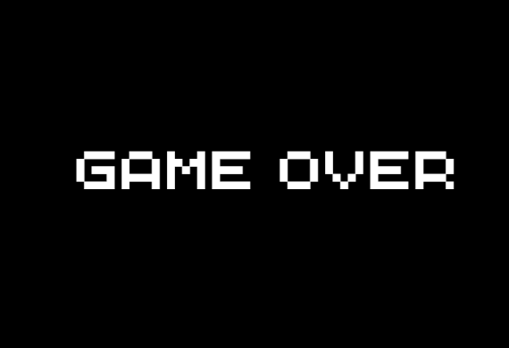

FASE 3
Nesta fase, o desafio é implementar um sistema de vidas para o Pac-Man utilizando pseudocódigo. Para isso, você deve declarar uma variável, e utilizando o sinal de igual, armazenar um valor para a quantidade de vidas do personagem, iniciando com um número inteiro à sua escolha, como por exemplo 3. Em seguida, é necessário criar uma lógica que diminua essa variável em 1 sempre que o Pac-Man for atingido por um fantasma. Quando o valor da variável chegar a zero, uma mensagem de "Game Over" deve ser exibida na tela para o jogador, caso contrário, as vidas irão diminuir até o infinito negativo. É fundamental lembrar que o operador = não serve para comparar valores, mas sim para atribuir um novo valor a uma variável — esse é um ponto chave da fase.
A lógica precisa ser detalhada com precisão. Apenas escrever "tirar uma vida" ou "game over" não será suficiente. O pseudocódigo deve deixar claro quando e como a variável de vidas é atualizada, qual é o evento que causa essa atualização (como uma colisão com um fantasma), e o que acontece pra haver a chamada da tela de game over. Este exercício reforça o conceito de que variáveis armazenam valores que mudam durante a execução de um programa, e que o controle de fluxo do jogo depende diretamente dessas alterações.
Pontuação:
♥
